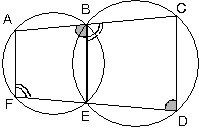

ÇEMBER
Bu ders notumuzda çembere giriş yapacaz daha sonrada çemberde açı ve özelliklerini göreceğiz. İyi Dersler…
| Düzlemde sabit bir noktadan eşit uzaklıktaki noktalar kümesine çember denir.O noktasından r uzaklıktaki noktalar kümesi, O merkezli ve r yarıçaplı çemberdir. |
 |
Çember üzerindeki iki noktayı birleştiren doğru parçasına kiriş denir. [CD] kirişi gibi.
En uzun kiriş merkezden geçen kiriştir. O merkezinden geçen [AB] kirişine çemberin çapı denir.
Çemberi iki noktada kesen doğrulara kesen denir. d2 doğrusu çemberi K ve L noktalarında kestiğine göre, kesendir.
Çemberi bir noktada kesen doğruya teğet denir. d1 doğrusu çemberi T noktasında kestiğinden teğettir.
| Çemberin merkezindeki 360° lik açı çember yayının tamamını görür.Çember yayının açısal değeri 360° dir. |
 |
| Çap çember yayını iki eşit parçaya ayırır. Her bir parça 180° dir. |
 |
1. Merkez Açı
Köşesi çemberin merkezinde olan açıya merkez açı denir. Birmerkez açının ölçüsü gördüğü yayın ölçüsüne eşittir.
|
 |
2. Çevre Açı
| Köşesi çemberin üzerinde, kenarları bu çemberin kirişleriolan açıya çevre açı denir. Çevre açının ölçüsü, gördüğüyayın ölçüsünün yarısına eşittir.
|
 |
| Aynı yayı gören çevre açının ölçüsü merkez açının ölçüsününyarısıdır.
|
 |
| Aynı yayı gören çevre açıların ölçüleri eşittir.m(BAC) = m(BEC) = m(BDC) |
 |
| Çapı gören çevre açının ölçüsü 90° dir.m(AEB) = m(ACB) = m(ADB) = 90° |
 |
3. Teğet – kiriş açı
| Köşesi çember üzerinde, kollarından biri çemberin teğeti, diğeri çemberin kirişi olan açıya, teğet – kiriş açı denir.Teğet – kiriş açının ölçüsü, gördüğü yayın ölçüsünün yarısına eşittir.
|
 |
- Aynı yayı gören teğet-kiriş açı ile çevre açının ölçüleri eşittir.
m(ABT) = m(ATC) = a
|
 |
4. İç Açı
| Bir çemberde kesişen farklı iki kirişin oluşturduğu açıya iç açı denir.İç açının ölçüsü gördüğü yayların ölçüleri toplamının yarısına eşittir.
|
 |
5. Dış Açı
| İki kesenin, iki teğetin veya bir teğetle bir keseninoluşturduğu açıya, çemberin bir dış açısı denir. |
 |
Bir dış açının ölçüsü, gördüğü yayların ölçüleri farkının yarısına eşittir.
APB açısı AB ve CD yaylarını gördüğüne göre,
[PB kesen,
|
 |
m(AC) = y ve m(CA) = x dersek

Burada, x + y = 360° olduğundan,
|
 |
- O merkezli yarım çemberde,
m(APC) = a
m(AB) = b
|
 |
6. Kirişler Dörtgeni
Kenarları bir çemberin kirişleri olan dörtgene kirişler dörtgeni denir.Bir kirişler dörtgeninde karşılıklı açılar bütünlerdir.
| m(A)+m(C)=180°m(B)+m(D)=180° |
|
 |
Karşılıklı açılarının ölçüleri toplamı 180 olan bütün dörtgenlerin köşelerinden bir çember geçer.
- Kesişen iki çemberde oluşan ABEF ve BCDE dörtgenlerinde
| m(ABE)=m(CDF)m(AFD)=m(CBE)m(ABE)+m(CBE)=180° olduğundan,
|
 |


{kind=link}